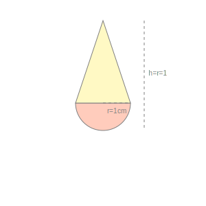
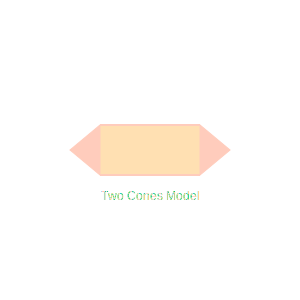
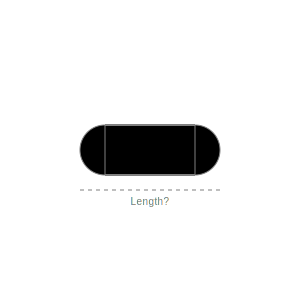
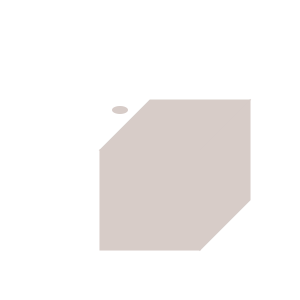
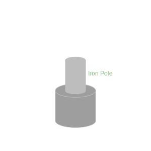
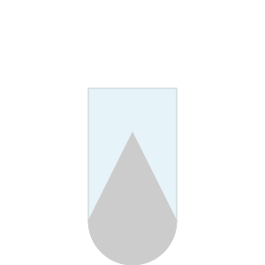
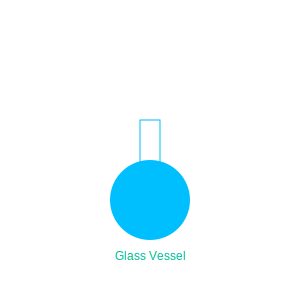

1. A solid is in the shape of a cone standing on a hemisphere with both their radii being
equal to 1 cm and the height of the cone is equal to its radius. Find the volume of the solid in terms of π.

Radius r = 1 cm. Height of cone h = r = 1 cm.
Volume = Volume of Cone + Volume of Hemisphere.
= (1/3)πr²h + (2/3)πr³
= (1/3)π(1) + (2/3)π(1)
= π cm³.
Volume = π cm³.
2. Rachel, an engineering student, was asked to make a model shaped like a cylinder with
two cones attached at its two ends. The diameter of the model is 3 cm and its length is 12 cm. If each cone
has a height of 2 cm, find the volume of air contained in the model that Rachel made.

Diameter = 3 cm => Radius r = 1.5 cm.
Total length = 12 cm. Height of each cone h_c = 2 cm.
Height of cylinder h_cyl = 12 - 2 - 2 = 8 cm.
Volume = Volume Cylinder + 2 × Volume Cone.
= πr²h_cyl + 2(1/3)πr²h_c
= πr²(h_cyl + (2/3)h_c)
= (22/7) × 1.5 × 1.5 × (8 + 4/3)
= (22/7) × 2.25 × (28/3)
= 22 × 0.75 × 4
= 22 × 3 = 66 cm³.
Volume = 66 cm³.
3. A gulab jamun, contains sugar syrup up to about 30% of its volume. Find approximately
how much syrup would be found in 45 gulab jamuns, each shaped like a cylinder with two hemispherical ends
with length 5 cm and diameter 2.8 cm (see Fig.).

Diameter 2.8 cm => Radius r = 1.4 cm.
Total length = 5 cm. Cylinder length h = 5 - 1.4 - 1.4 = 2.2 cm.
Volume of one Gulab Jamun = Vol Cyl + 2 × Vol Hemi.
= πr²h + (4/3)πr³
= πr²(h + 4r/3)
= (22/7) × 1.4 × 1.4 × (2.2 + 5.6/3)
= 6.16 × (2.2 + 1.866) = 6.16 × 4.066 ≈ 25.05 cm³.
Volume of 45 Gulab Jamuns = 45 × 25.05 = 1127.25 cm³.
Syrup = 30% of Volume = 0.30 × 1127.25 ≈ 338 cm³.
Syrup Volume ≈ 338 cm³.
4. A pen stand made of wood is in the shape of a cuboid with four conical depressions to
hold pens. The dimensions of the cuboid are 15 cm by 10 cm by 3.5 cm. The radius of each of the depressions
is 0.5 cm and the depth is 1.4 cm. Find the volume of wood in the entire stand.

Volume of Cuboid = 15 × 10 × 3.5 = 525 cm³.
Volume of one Conical Depression = (1/3)πr²h.
r = 0.5 cm, h = 1.4 cm.
Vol = (1/3) × (22/7) × 0.25 × 1.4 = (1/3) × 22 × 0.25 × 0.2 = 1.1/3 = 0.366 cm³.
Volume of 4 Depressions = 4 × 0.366 = 1.464 cm³.
Volume of Wood = 525 - 1.464 = 523.536 cm³.
Volume of Wood ≈ 523.53 cm³.
5. A vessel is in the form of an inverted cone. Its height is 8 cm and the radius of its
top, which is open, is 5 cm. It is filled with water up to the brim. When lead shots, each of which is a
sphere of radius 0.5 cm are dropped into the vessel, one-fourth of the water flows out. Find the number of
lead shots dropped in the vessel.
Volume of Cone = (1/3)πr²h = (1/3)π(25)(8) = 200π/3 cm³.
Volume of water flowed out = (1/4) × (200π/3) = 50π/3 cm³.
Volume of one lead shot (Sphere) = (4/3)πr³ = (4/3)π(0.5)³ = (4/3)π(0.125) = 0.5π/3 = π/6 cm³.
Number of shots = (Total Val Flowed) / (Vol of one shot).
= (50π/3) / (π/6) = (50/3) × 6 = 100.
Number of Lead Shots = 100.
6. A solid iron pole consists of a cylinder of height 220 cm and base diameter 24 cm,
which is surmounted by another cylinder of height 60 cm and radius 8 cm. Find the mass of the pole, given
that 1 cm³ of iron has approximately 8g mass. (Use π = 3.14)

Big Cylinder: h1 = 220, r1 = 12. small Cylinder: h2 = 60, r2 = 8.
Volume = πr₁²h₁ + πr₂²h₂
= 3.14 × (144 × 220 + 64 × 60)
= 3.14 × (31680 + 3840)
= 3.14 × 35520 = 111532.8 cm³.
Mass = 111532.8 × 8 g = 892262.4 g = 892.26 kg.
Mass = 892.26 kg.
7. A solid consisting of a right circular cone of height 120 cm and radius 60 cm standing
on a hemisphere of radius 60 cm is placed upright in a right circular cylinder full of water such that it
touches the bottom. Find the volume of water left in the cylinder, if the radius of the cylinder is 60 cm
and its height is 180 cm.

Radius r = 60 cm (all same).
Cylinder height H = 180 cm. Cone height h = 120 cm. Hemisphere height = 60 cm.
Total height of solid = 120 + 60 = 180 cm = H. Matches.
Volume of Water Left = Vol Cylinder - Vol Solid.
= πr²H - [(1/3)πr²h + (2/3)πr³]
= πr² [H - h/3 - 2r/3]
= (22/7) × 3600 × [180 - 40 - 40]
= (22/7) × 3600 × 100
= 1.131 m³.
Volume of Water Left ≈ 1.131 m³.
8. A spherical glass vessel has a cylindrical neck 8 cm long, 2 cm in diameter; the
diameter of the spherical part is 8.5 cm. By measuring the amount of water it holds, a child finds its
volume to be 345 cm³. Check whether she is correct, taking the above as the inside measurements, and π =
3.14.

Sphere d = 8.5 => r = 4.25. Cylinder r = 1, h = 8.
Volume = Volume Sphere + Volume Cylinder.
= (4/3)π(4.25)³ + π(1)²(8)
= 3.14 [(4/3)(76.765) + 8]
= 3.14 [102.35 + 8]
= 3.14 × 110.35 ≈ 346.51 cm³.
346.51 ≠ 345.
She is incorrect. Correct volume ≈ 346.51 cm³.